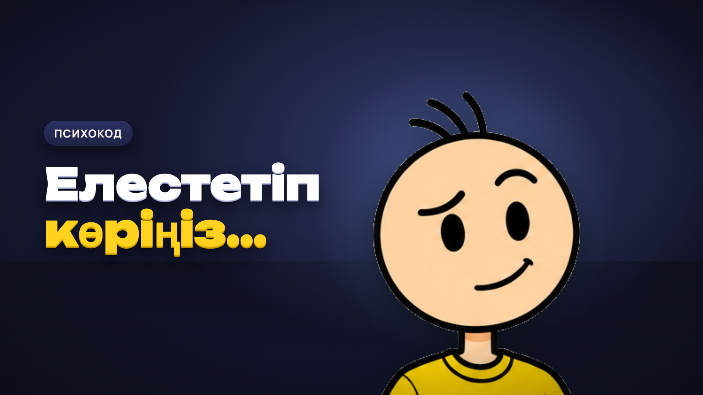
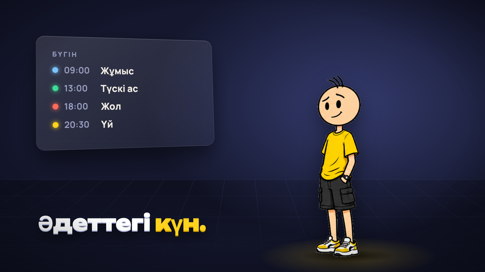
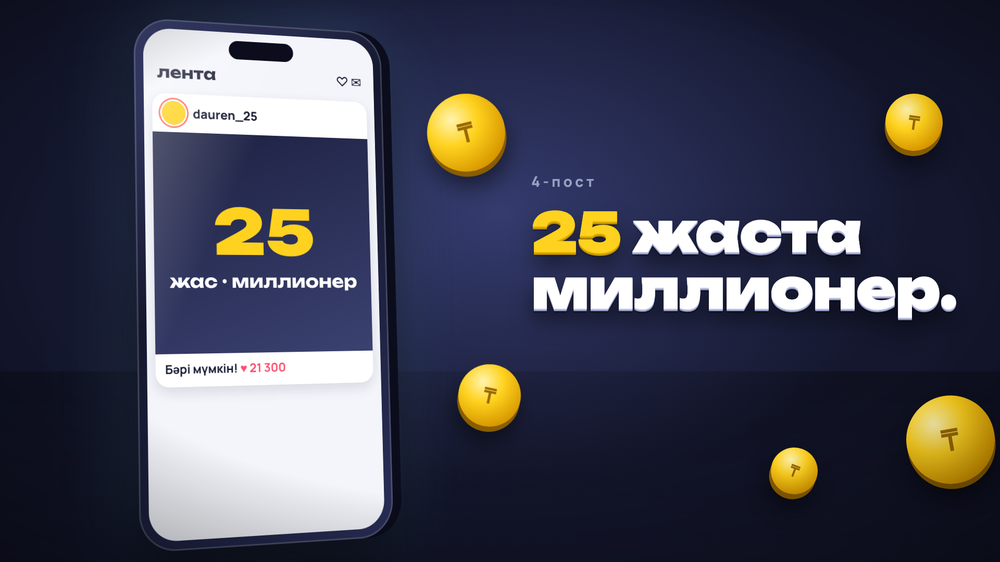
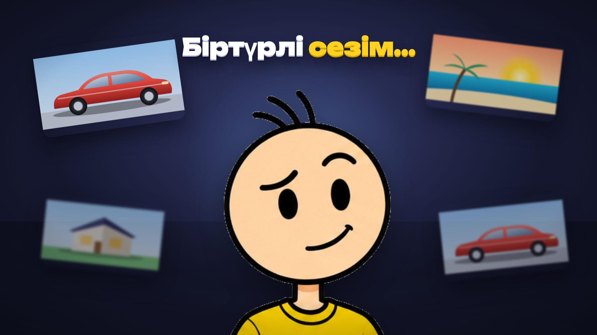
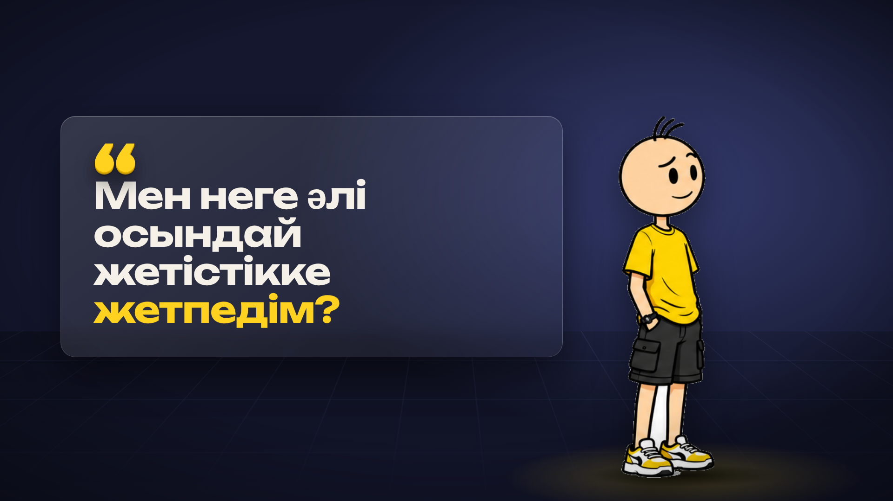
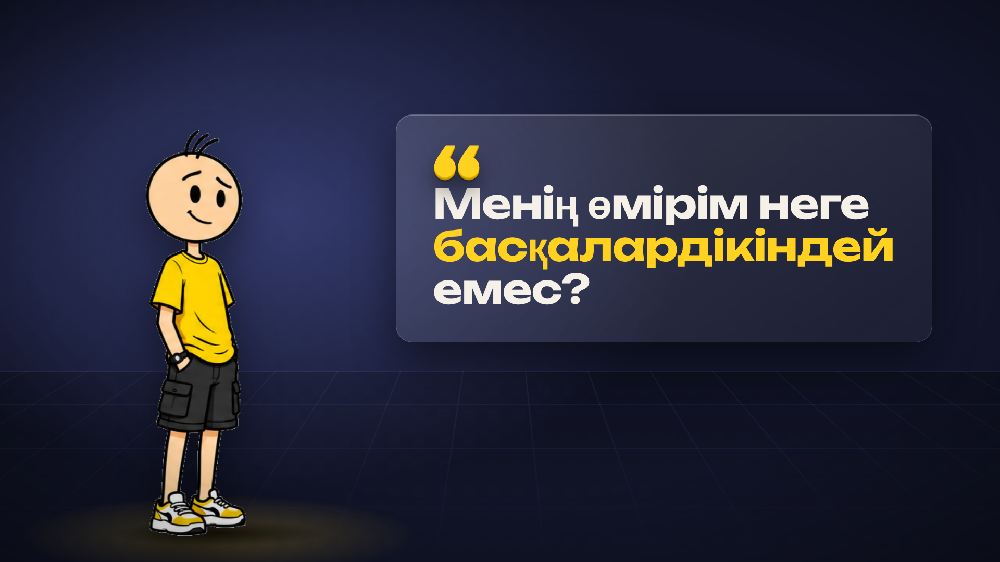
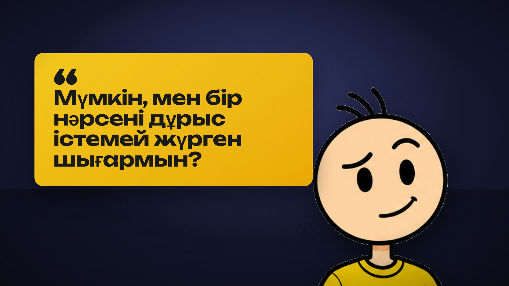
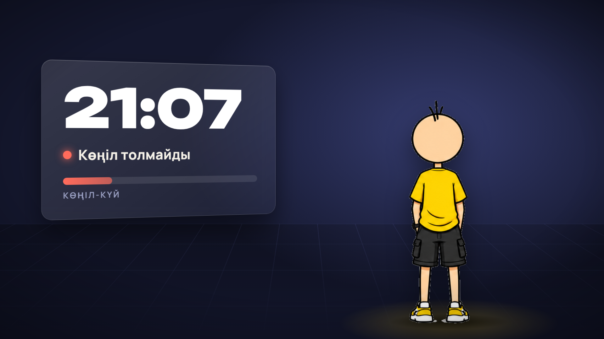
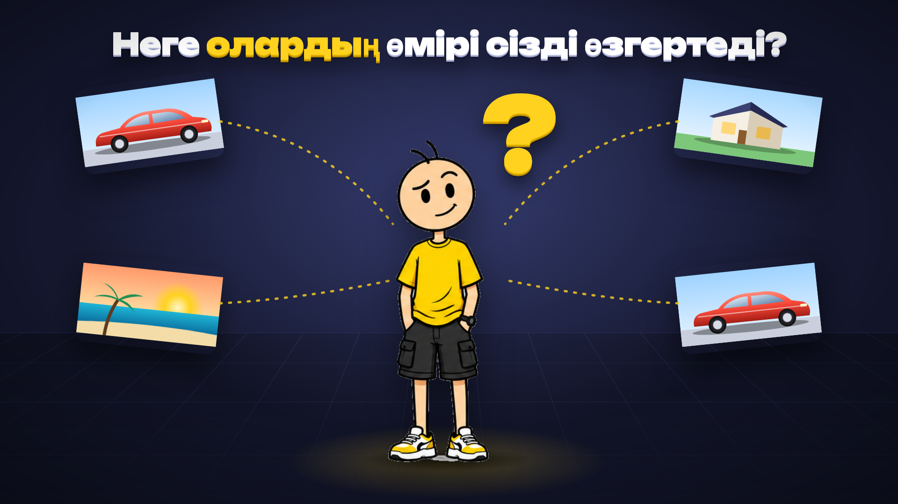
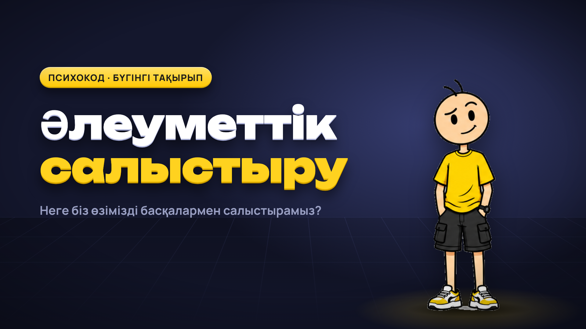

Елестетіп көріңіз...

Сіз кешке үйде отырсыз.

Күніңіз әдеттегідей өтті.

Телефоныңызды алып, әлеуметтік желіні ашасыз.

Бірінші адамның жаңа көлік алғанын көресіз.

Екіншісі шетелде демалып жүр.

Үшіншісі әдемі үй сатып алған.

Ал тағы біреуі небәрі 25 жасында миллионер болыпты.

Сіз олардың суреттерін қарап отырып, біртүрлі сезімге бөленесіз.

«Мен неге әлі осындай жетістікке жетпедім?»

«Менің өмірім неге басқалардікіндей емес?»

«Мүмкін, мен бір нәрсені дұрыс істемей жүрген шығармын?»

Бірнеше минут бұрын бәрі жақсы еді.

Бірақ енді өз өміріңіз көңіліңізден шықпай қалғандай.
Бір қызығы, сіз ол адамдарды мүлде танымайсыз.
Олардың қалай өмір сүретінін де білмейсіз.

Сонда неге олардың өмірі сіздің өзіңізге деген көзқарасыңызды өзгерте алады?

Бүгін біз ... әлеуметтік салыстыру туралы сөйлесеміз.